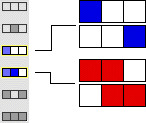

| Here is an example of a 1-dimensional, N=3, outer totalistic rule with two configurations selected. |
| * In the first, the central cell is dead and one of the two surrounding cells is alive. There are two nbhd configs of this type, indicated by the blue pictures on the right. |
| * In the second, the central cell is alive and one of the two surrounding cells is alive. There are two nbhd configs of this type, indicated by the red pictures on the right. |
|  |
| This outer totalistic configuration describes the CA in which any of these four nbhd configs gives rise to a live cell in the next generation. |
Return to Outer totalistic rules.